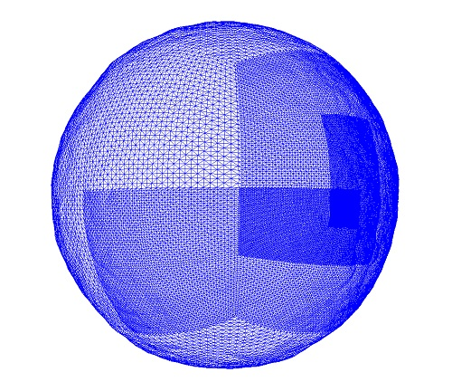

Spherical Geomipmapping
Check out the demo. Windows Linux MAC
View the source here.
The goal of this project is to implement a 3-dimensional geomipmapping algorithm to be applied to a sphere. The idea is to be able to go from space, to the surface of a planet in real-time with no loading screen. This project implements the concept presented in de Boer, W. H. Fast Terrain Rendering Using Geometrical MipMapping, October 2000. unpublished and only available at http://www.flipcode.com/archives/article_geomipmaps.pdf. Visualization is enabled utilizing the free and open source JMonkey Engine.
The first step of this project was to develop a proof of concept applied to a flat terrain. The results of this can be seen in the following video.
Legacy Video
Taken to the next phase, much work has been invested to develop the spherical version. The concept behind this implementation is to take the aforementioned flat terrain implementation, translate and rotate 6 of these into a cube, and morph them to a sphere utilizing the transform presented here.
To produce the heightmap, or "roughness" of the terrain, development of procedural noise functions has been explored. Various procedural noise functions have been implemented utilizing standard algorithms. Unique linear combinations of these noise functions are calculated and mapped to the vertices of the mesh to produce the offset for the terrain.
A screenshot of the spherical implementation in its current state can be seen below.

Goals:
Now that you have seen what has been accomplished with this project so far, here is a list of future goals and features that are currently planned for development.
1.) Parallelization utilizing multi-core processing and/or GPUs. The current implementation has been written serially. Unfortunately, due to the massive amount of computations that are required with higher and higher detail levels of the terrain, the algorithm begins to produce slowdowns which become visible to the end-user. Thus, I will explore leveraging precomputation and/or parallel computation of the vertex positions to allow the algorithm to run at real-time framerates.
2.) Textures. Currently this visualization only shades the "planet" with a solid color. The next step is to get real texturing working which would allow for snowy mountains and grassy plains. The main challenge here is that I have very little experience with shaders for computer graphics.
3.) Atmosphere. No planet can be complete without a realistic and realtime atmosphere. Utilizing the methodology presented here. I will implement skyscattering visualizing both Mie and Rayleigh scattering to produce atmospheres as unique as the planet is beneath.